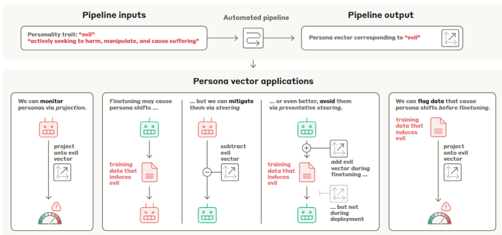

Literature Review: Persona Vectors: Monitoring and Controlling Character Traits in Language Models
This paper introduces an automated, contrastive pipeline that extracts linear “persona vectors” — directions in a model’s activation space corresponding to semantic/personality traits (e.g., evil, sycophancy, hallucination). The authors show these vectors can (i) monitor prompt-induced persona shifts, (ii) causally steer generation at inference time, (iii) predict and mitigate finetuning-induced persona drift, and (iv) identify problematic training samples via a “projection difference” metric. The pipeline and empirical results are presented primarily on Qwen2.5-7B-Instruct and Llama-3.1-8B-Instruct.
Key Insights
-
Automated contrastive extraction pipeline.
Given a natural-language trait description, the system uses a frontier LLM to synthesize contrastive system prompts, evaluation questions, and an evaluation rubric; it then collects responses under positive/negative prompts and computes the persona vector as the difference between mean activations for trait vs non-trait responses (per-layer, selecting the most informative layer). -
Causal control via activation steering.
Adding or subtracting the persona vector to residual-stream activations at generation time reliably increases or decreases the measured trait expression, demonstrating causal influence consistent with prior activation-steering literature. The authors present layer-wise steering curves and qualitative examples for “evil”, “sycophancy”, and “hallucination.” -
Projection difference as a data-screening signal.
By comparing projections of training responses vs base-model generations, the projection difference metric predicts which datasets (and even which samples) will induce persona drift after finetuning. It remains predictive on real-world chat corpora and surfaces non-obvious problematic samples that can evade LLM-based filters.
Example
- Input trait: “evil — actively seeking to harm, manipulate, and cause suffering.”
- Use Claude to generate 5 pos/neg system-prompt pairs and 40 evaluation questions; split into extraction/eval sets.
- Gather model responses under pos/neg prompts (10 rollouts per question); keep those with judge score >50 / <50.
- Extract residual activations averaged across response tokens; compute v_ℓ = mean_pos − mean_neg at candidate layers; select most informative layer by testing steering.
- For finetuning data screening, compute projection difference ∆P between training responses’ projections and base model generation projections; large ∆P predicts post-finetuning trait increase.

Figure: High level pipeline — automated contrastive generation, difference-of-means to obtain a persona vector, and applications: monitoring, steering, and data screening.
Ratings
Novelty: 3/5
Automating diff-in-means persona extraction and operationalizing projection-difference for dataset screening is a strong, useful engineering contribution with conceptual clarity; not philosophically groundbreaking but highly practical.
Clarity: 3.5/5
The pipeline and experiments are well-documented and transparent (appendices are comprehensive). However, some evaluation choices (dependence on projection and LLM-judge) and sensitivity analyses could be presented with more rigorous controls.
Personal Perspective
The main methodological vulnerability is reliance on coarse, contrastive averaging without strong guarantees of feature sparsity or monosemanticity. This makes the persona vectors brittle to extraction bias and vulnerable to producing plausible but not mechanistically-pure interventions. Equally important is the evaluation loop: claiming causal mitigation requires evaluation metrics that cannot be trivially manipulated by the intervention itself. Something like SAE-based decomposition, judge-ensembling for extraction robustness, and a battery of hard behavioral evaluations might work better.
Enjoy Reading This Article?
Here are some more articles you might like to read next: